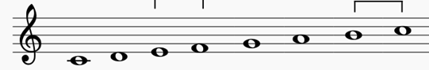

Scales
Just what is a scale? A scale in music is a group of notes that are arranged in ascending or descending order by pitch. They are the basic building blocks in song composition. There are major scales and minor scales. Major scales consist of eight notes. It starts and ends on the Tonic note. It consists of 5 whole steps and 2 half steps. A half step is the smallest interval between two notes, and it refers to notes that are directly next to each other. A whole step is equal to two half steps or two notes that have one note in between them. Songs written with major scales are associated with bright and happy sounds. Songs written with minor scales have more somber and introspective sounds. The first step in composing a song is to decide what type of feeling you want the song to convey.

Tonic and Dominant
A major component in music theory are the Tonic(I) and Dominant(V) degrees. The Tonic degree is the first degree in any scale. The Dominant degree is the fifth degree in any scale. Using the Dominant degree in a song creates a feeling of tension in the music. Don’t use it as the last note in a song because it will sound unfinished. The Tonic degree is often use to start and end a song. This degree creates a sense of resolution and stability. It is also the note upon which all other notes are based upon. Other notes will refer to the Tonic. The circled notes are the Tonic notes in the C major scale.
